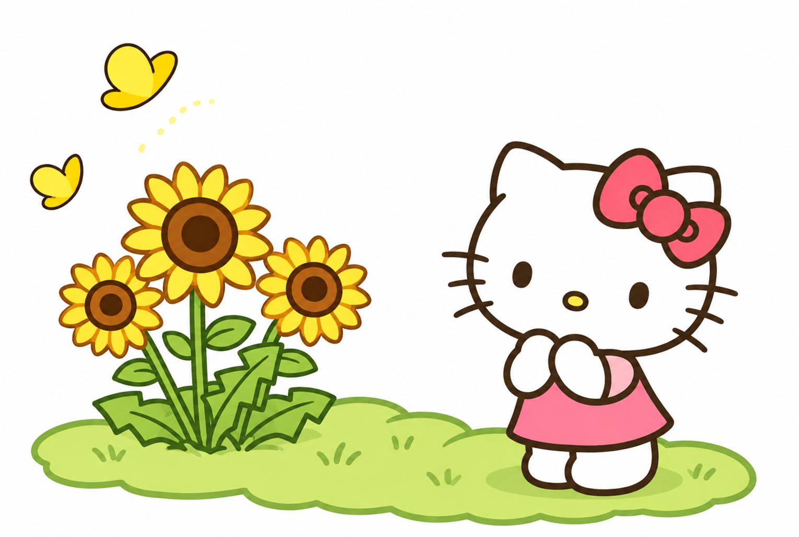
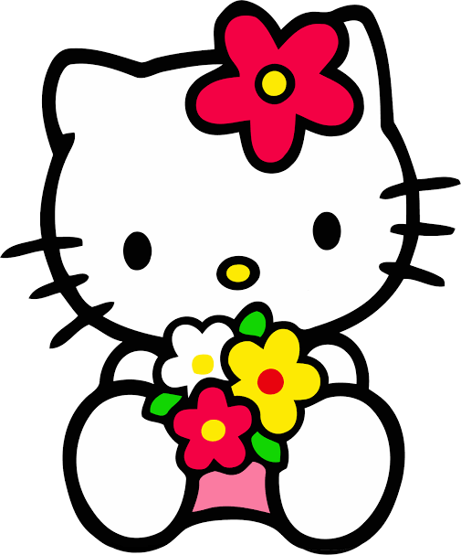
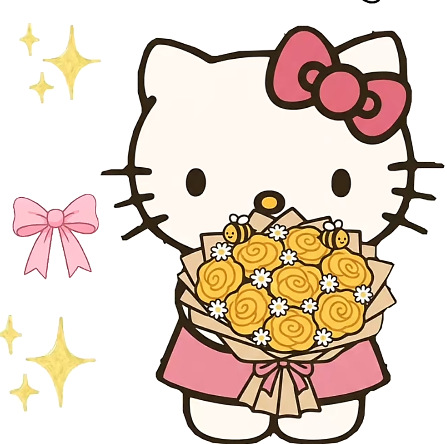
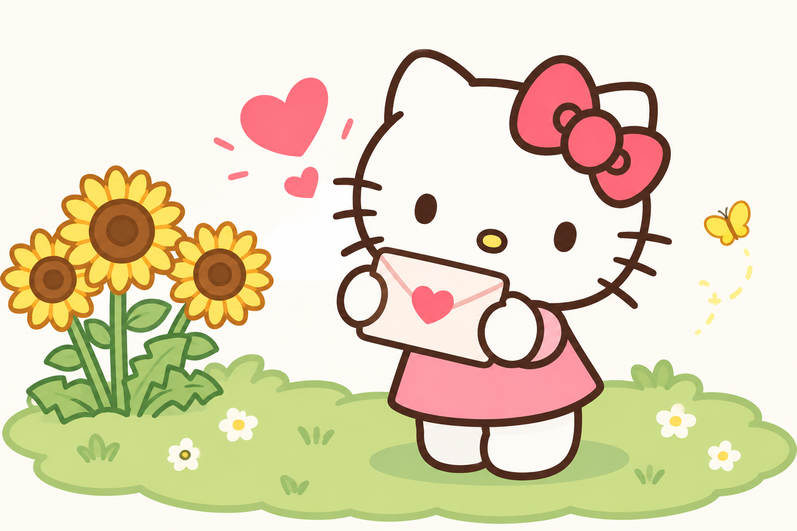

For My Bombon
A small gift for you, but with all my heart....

Even though the distance between the two exists,
you will always receive your yellow flowers, even if only on a screen. 🌻

Each flower is a little reminder of
how special and important you are to me. 💖

So many things to tell you........ ✨

My love 🍓,
A small gesture, but one made with all my heart. I don't know if yellow flowers are given in your country. I’ve felt so much for you since I met you, I’m truly so happy with every call and video call we have every day, These are very special moments for me, small moments, but I truly cherish them every day; my heart is happy because of you.🫵
I have realized that it is precisely those simple moments that stay in the heart the most, the ones you remember even when everything changes. Because it’s not about what you do, but about who you live with.
Every memory with you is cherished as something special, as if it held a unique glow. And honestly, I hope we still have many more moments to live, more stories to tell and more memories to treasure over time.🥺
And thank you so much for these beautiful moments we shared, all those emotions, glances, and sincere feelings, I am truly deeply in love with you, and it is thanks to how amazing you are, I hope we build more moments and memories together, good or bad, Everything feels beautiful if it's with you...... Te amo mucho, Mahal kitta, I love you so much, Palangga taka. 😘😘
With much love from,
Your baby 🦊